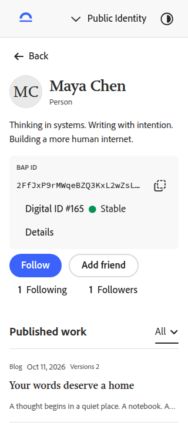
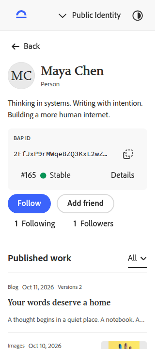
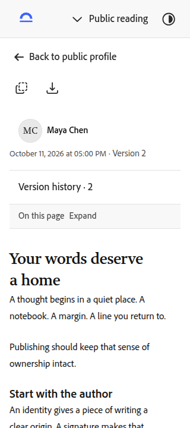
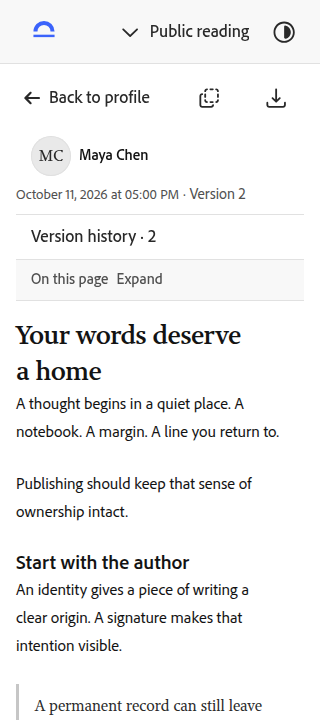

手机首屏 · 两处轻量调整
仅收拢主页标识区和阅读页头部。编号、状态、完整标识访问、作者、时间、版本、目录与操作按钮保留；图标宽度通过官方 S2 styles API 设置，手机页头操作范围至少 44 × 44px。
前后为同一资料和作品、英文浅色、320 × 720 浏览器视口，等待字体加载稳定；基线 a86850a。点击截图查看原尺寸。
主页标识区
重复的“Digital ID”在手机视觉中收起，辅助技术仍可读取完整名称。编号、状态与详情入口同排；标识区由 159.19px 降至 127.19px，第一条作品提前 32px。


阅读页头部
英文返回文案缩短为“Back to profile”，复制和导出回到同一行；减少工具栏、版本信息和正文之间的间距。正文标题由 416.75px 提前至 316.75px。


本轮检查
13 项相关操作检查、4 项最终位置复核通过；320px、390px 与 1440px 的 8 个页面布局无横向溢出，4 次中英主题自动无障碍检查零违规、零 incomplete，浏览器与控制台错误为零。未将本轮扩大为全站重复验收。
桌面数字 ID 标签仍完整显示。英文返回文案沿用共用入口；原 v0.4.0 工作区保持原样。本轮使用浏览器视口，设备预设没有启用实际触摸能力；不宣称实机触摸验收。用户视觉复核待确认。